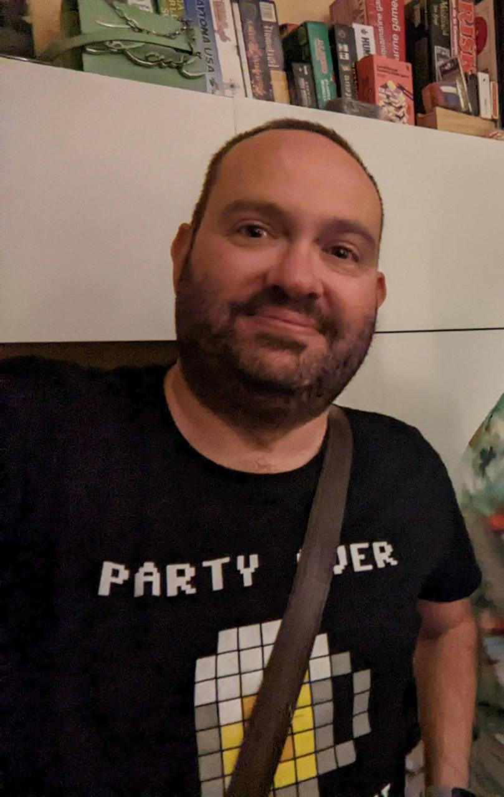

Cómo usa la IA un estadístico erre-ro
Del trabajo a la piscina pasando por el aula
19 de noviembre de 2026
José Luis Cañadas Reche
- Estadístico. Empecé analizando encuestas sociales en el CSIC
- Desde 2016 en empresa: Consultora, Telefónica, Orange e idealista desde 2025
- Erre-ro y bloguero desde antes de que R fuera cool

Si escribe el código por mí,
¿para qué me sirve saber estadística?
La IA sube el suelo.
No sube el techo.
El método
Yo dirijo → ella programa → yo verifico
Las herramientas
Claude Code
Agente en terminal
- Lee y escribe ficheros del repo
- Ejecuta R, bash, python, lo que sea e itera solo
- Es lo que hace posible el flujo de los
.qmd
Posit AI en Positron
20 €/mes
- Varios modelos. Yo uso mucho glm 5.3
- Integrado en Positron y RStudio
- Lee del REPL: ve tu sesión
- No hay que irse a la terminal
Nota
Si sois analistas y no vivís en la terminal, esta segunda es la que os recomiendo: vive dentro del IDE donde ya trabajáis.
1 · El trabajo
Informes .qmd analíticos y el informe catastral
El problema no es el análisis
Es que el mismo análisis tiene dos audiencias incompatibles.
Equipo técnico → repo
El código, los supuestos, el detalle reproducible
Negocio → Confluence
La conclusión, el gráfico, y ni una línea de R
Antes: escribir el análisis una vez y traducirlo a mano otra vez.
Y la segunda versión, con prisa, se hacía mal o no se hacía.
El flujo real
- Yo decido el análisis y le digo que sea en R (o python o sql o lo que sea, no hay miedo)
- Ella escribe el
.qmd - Yo verifico los resultados — no el estilo del código
- Le pido dos salidas del mismo documento: técnica para el repo, negocio para Confluence
El informe catastral

Dónde está el techo: verificar
Error 1
Cambio de orden en filas de una tabla html de plotly Datos de Andalucía totales no cuadraban
El código compilaba.
El informe era bonito.
El número estaba mal.
Nadie de negocio lo habría notado.
Qué puso el estadístico
Decidir qué se calcula, con qué método y con qué supuestos.
Comprobar que el resultado es correcto.
La IA subió el suelo en la parte que odiaba —la segunda versión del documento, la que antes no se hacía— y no tocó el techo.
2 · El aula
Un simulador de encuestas electorales
Explicar lo difícil de explicar
¿Por qué dos encuestas honestas y bien hechas dan resultados distintos?
Es de las cosas más difíciles de enseñar con palabras.
Y de las más fáciles de enseñar con una barra que se mueve.
Que quede claro
La app muestrea correctamente. No es un ejemplo de la IA equivocándose. Es una herramienta docente que funciona.
Qué me dio la IA
Toda la carpintería de Shiny: reactividad, layout, sliders, gráficos, el pulido.
Horas de trabajo que no son estadística.
Y que son exactamente la razón por la que muchos docentes nunca llegan a construir su material interactivo.
La barrera para que un profesor tenga
su propio simulador acaba de desaparecer
Demo
Tres ejemplos
Plan B
Lo que todavía no está: la cocina
Ponderación y recuerdo de voto.
Que es donde de verdad se decide el titular.
Qué puso el estadístico: el diseño
Aquí no hay ningún error de la IA que enseñar. Y por eso este bloque es interesante.
Qué sesgos merece la pena simular. Cómo se formalizan. Qué tiene que ver el alumno en pantalla para que le haga clic.
Eso no sale de un modelo. Sale de haber analizado encuestas y de haber intentado explicárselas a alguien.
La IA construye el simulador.
Lo que simular, lo pones tú.
3 · La piscina
Mis datos de natación del Garmin Enlace
Un análisis que no le importa a nadie
Años de sesiones de natación registradas por el reloj.
Nunca las había analizado en serio.
No le importa a nadie. No lo paga nadie. No cabe en un fin de semana.
Y ese es justamente el argumento.
Qué me dio la IA
Descarga, limpieza de los datos del Garmin, exploración, gráficos.

Este es el caso donde el suelo sube más
Un análisis que no se habría hecho jamás, ahora existe.
No porque sea difícil: porque nunca habría merecido las horas.
Qué puso el estadístico: interpretar
Los gráficos salen solos.
Saber si esa mejora es una mejora —o es que ese mes nadé menos series largas— no.
La respuesta llegó en diez minutos.
La pregunta la puse yo.
Cierre
Qué hace bien y qué hace mal
Bien
- Carpintería: Shiny, Quarto, boilerplate, docs
- Traducir entre formatos y audiencias
- Bajar el coste de empezar algo
- Hacer posible lo que no compensaba
Mal
- Elegir el método correcto
- Los supuestos que nadie escribió
- Decirte cuándo su respuesta está mal
- Saber qué pregunta había que hacer
Las tres preguntas
- ¿Es esta la pregunta correcta?
- ¿Es este el método correcto para responderla?
- ¿Es creíble este resultado?
Un modelo te ayuda con la segunda —si tú ya la sabes plantear.
La primera y la tercera son enteramente tuyas.
La IA sube el suelo.
El techo lo sigues poniendo tú.
Por eso hay que seguir
enseñando estadística
Si la carpintería la hace la máquina, lo único que te distingue es el criterio.
Que es lo que se enseña aquí.
Gracias
José Luis Cañadas Reche
idealista · Senior Data Scientist
6R4EDI · Sigüenza